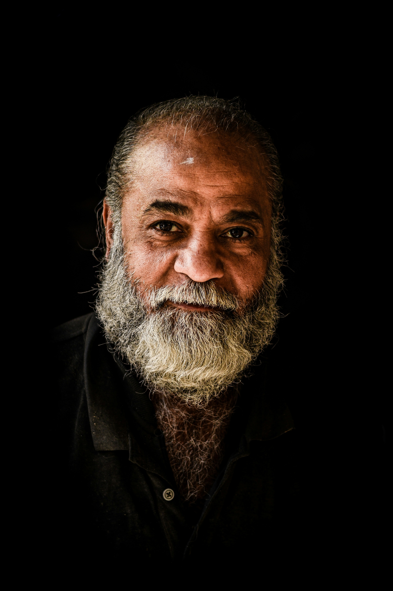
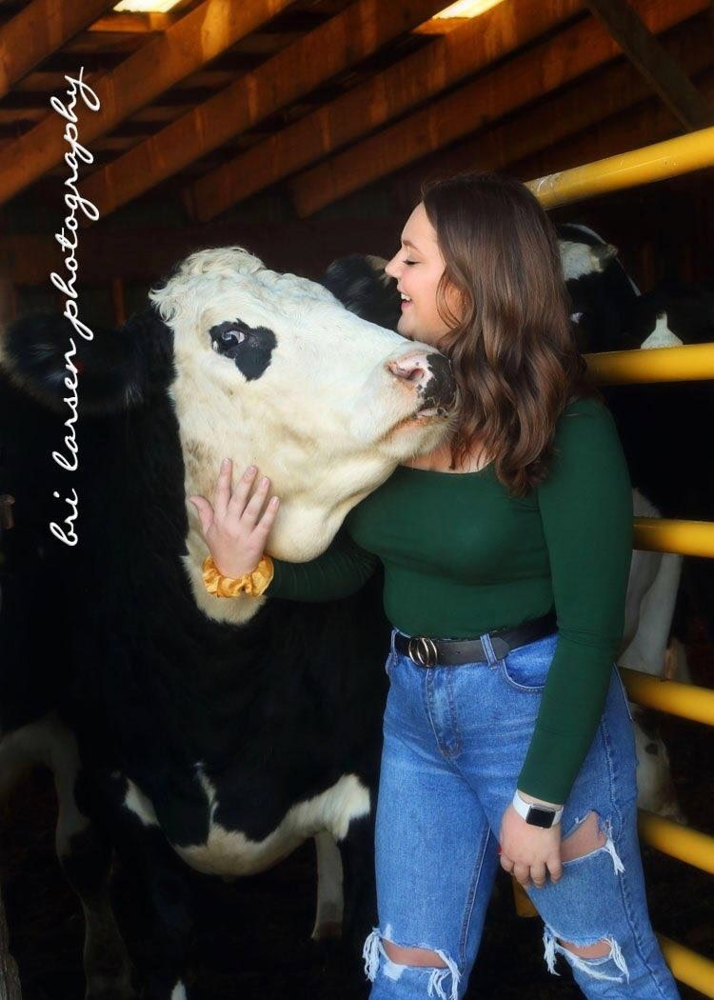
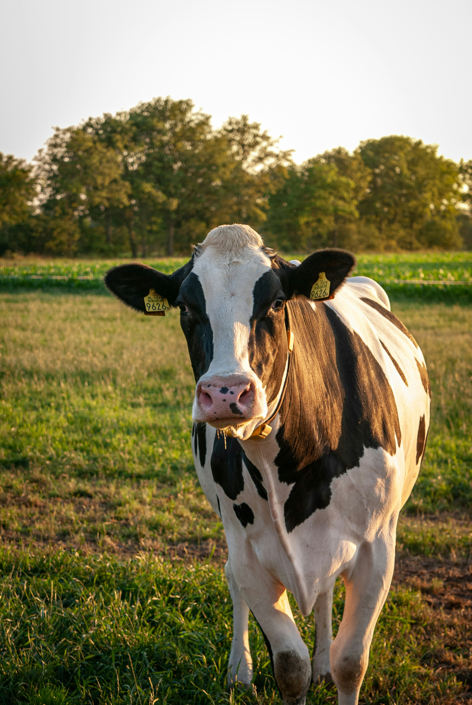

|
Liss "The Boss" CheerLiss Cheer is the family matriarch, running the business, farm, and family since she was just a girl! Liss grew up on the farm, so Cheddar Than Revenge is in her veins. She'll welcome you in with a hug and a chore! Her favorite cheese is white cheese curds. |
 |
Jim "The Man" CheerJim Cheer visited the Cheer farm for the first time for Christmas of 2000 with his then-girlfriend Liss, and hasn't left since. He is his wife's right-hand man and provides constant positivity and cow babysitting support every day. His favorite cheese is Meunster. |
 |
Elise CheerElise Cheer is the oldest daughter in the Cheer family. She runs the family's social media and graphics, spreading the Cheer love as far as she can. Her favorite cheese is White Cheddar. |
 |
Millie CheerMillie is the youngest daughter of the family. She runs the Elk Creek shop, upholding Cheer family positivity and love in her own shop. Her favorite cheese is Port Wine spread. |
 |
MyrtleMyrtle is the baby of the family. Everyone loves our girl and she is the first to greet every guest. The oldest cow on the farm, Myrtle spends her time sun bathing and chowing down. Her favorite cheese is any cheese! |

TEAM